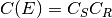
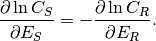
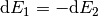
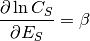
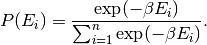
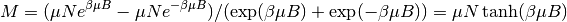
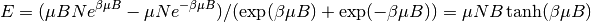

Week 1¶
Phase Space¶
Why is statistics important? Remember we are dealing with Avogadro’s number of DoFs. If we are going to calculate the dynamics of this system by calculating the dynamics of each particles. To store one screenshot of the system with each DoF take only 8 bits, we need  bytes that is
bytes that is  GB. It is not even possible to store only one screenshot of the system. So time to change our view of these kind of systems.
GB. It is not even possible to store only one screenshot of the system. So time to change our view of these kind of systems.

Newton’s plan of mechanics. Mechanics was in the center of all physics.
What is mechanics? It deals with dynmaics in the following way:
- Description of initial state
- Time evolution of the system
- Extraction of observables
As we already mentioned initial state, we need to explain how to describe a state. A vector in phase space gives us a state. Time evolution is motion of points in phase space. Finally, we can do whatever is needed to extract observables, for example just use projection of points in phase space.
Problem is, when it comes to stat mech, it’s not possible to do all these DoFs one by one. We need a new concept.
Boltzmann Factor¶

Boltzmann factor gives us the (not normalized) probability of the system staying on a phase space state with energy  .
.
Note
Why do Boltzmann factor appear a lot in equilibrium statistical mechanics? Equilibrium of the system means when we add infinitesimal amout of energy to the whole thing including system and reservior, a characteristic quantity  won’t change. That is the system and the reservior will have the same changing rate of the characteristic quantity when energy is changed, i.e.,

We have  in a equilibrium state. They should both be a constant, which we set to  . Finally we have something like
. Finally we have something like

which will give us a Boltzmann factor there.
This is just a very simple precedure to show that Boltzmann factor is kind of a natural factor in equilibrium system.
Magnetization¶
We have such a result in an experiment of magnetization with N magnetic dipoles in 1D.
How can we describe this with a theory?
It’s not possible to describe the system by writing down the dynamics of each magnetic dipole. So we have to try some macroscpic view of the system. Probability theory is a great tool for this. The probability of a dipole on a energy state  is
is

So the megnetization in this simple case is

Use ipython notebook to display this result. The original notebook can be downloaded from here. (Just put the link to nbviewer and everyone can view online.)
%pylab inline
from pylab import *
Populating the interactive namespace from numpy and matplotlib
x=linspace(0,10,100)
y=tanh(x)
figure()
plot(x, y, 'r')
xlabel('External Magnetic Field')
ylabel('M')
title('Tanh theory')
show();

This is exactly the thing we saw in the experiment.
This can be classified as a category of problems. In this specific example we see saturation of magnetization. However this is not alway true.
Note
Examples can be shown here.
Heat Capacity¶
Another category of problems is temperature related. For example, a study of average energy with change temperature.
For the paramagnetic example, the energy of the system is

Obviously, no phase transition would occur. But if we introduce self interactions between dipoles and go to higher dimensions, it’s possible to find phase transitions.